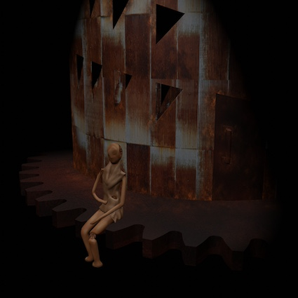

Cognition
Cognition is a short teaser for an interactive VR experience that explores how a user's sense of
presence and level of immersion change when they can reach out and touch the things that they see in VR.
It tells a story of inequity, ownership, power and free will.
Together with Eirini Lampiri, I worked on the storyline, the artistic style and the overall concept.
I designed and 3D-modelled the characters, created the animations, developed the virtual scene including lights and sound and implemented the functionality in Unity.
I combined Vive trackers, leapmotion hand tracking and an Arduino with two potentiometers to track the rotation of two small doors.